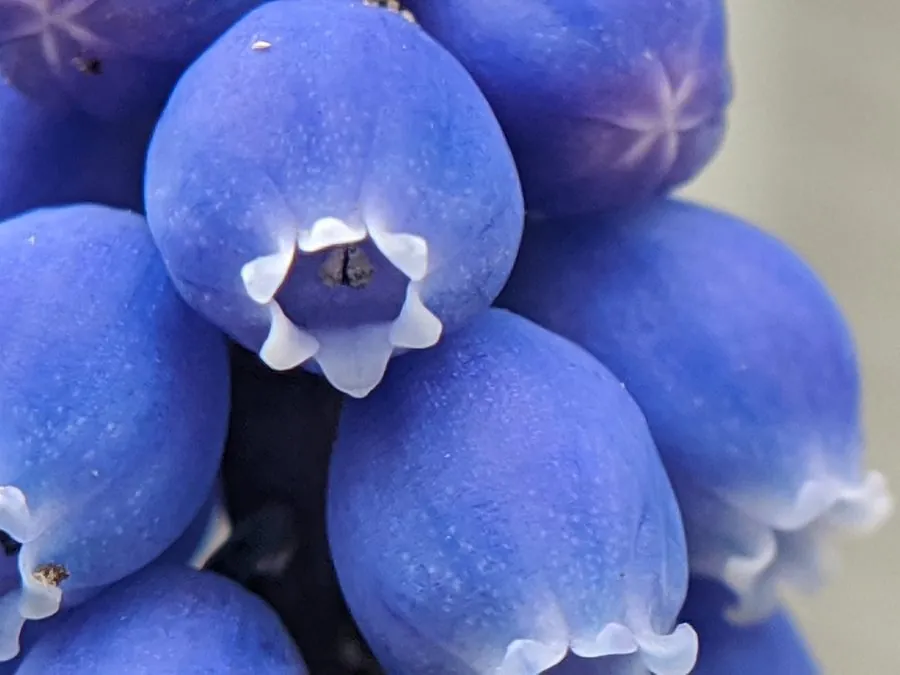

花卉与草本 · 植物界
葡萄风信子 Muscari botryoides

天门冬科多年生球根花卉，春季开蓝紫色小球状花，花序密集如葡萄串，是早春庭院与盆栽的常见花卉。
- 分类
- 门被子植物门纲木兰纲目天门冬目科天门冬科属蓝壶花属
- 栖息环境
- 地中海沿岸的草坡与林缘，喜凉爽湿润
- 地理分布
- 原产地中海沿岸及小亚细亚；中国各地引种栽培
- 保护级别
- 暂无评估；中国未列入国家重点保护野生植物名录
物种志
葡萄风信子为天门冬科蓝壶花属多年生球根草本，株高 15–25 厘米，地下具球形鳞茎。叶片线形，基生，粉绿色。花葶直立，总状花序密集，由数十朵小球状花组成，花冠坛状，蓝紫色至淡蓝色，顶端常闭合，花期 3–5 月；果实为蒴果。
葡萄风信子原产地中海沿岸及小亚细亚一带，中国各地引种栽培，喜凉爽湿润、阳光充足的环境，耐寒性较强，适宜疏松肥沃、排水良好的沙质土壤。它花序密集、形如葡萄串，花色清新，是早春庭院、花坛与盆栽的常见花卉；也可成片种植于草坪边缘与林下。栽培以分球繁殖为主，夏季休眠期需保持干燥，秋季栽种后浇透水即可。
形态与习性
- 株高15–25 厘米，花葶直立
- 花期3–5 月，花蓝紫色
- 果期花后结蒴果
- 光照喜阳光充足
- 水分喜湿润，休眠期保持干燥
- 土壤疏松肥沃、排水良好的沙质土
- 主要用途早春花坛、草坪边缘与盆栽
趣味知识
- 葡萄风信子的花序由数十朵小球状花密集组成，形似一串葡萄。
- 它虽然叫“风信子”，却属于天门冬科蓝壶花属。
- 葡萄风信子耐寒性较强，适合在北方露地越冬。
- 夏季休眠期要保持干燥，否则鳞茎容易腐烂。